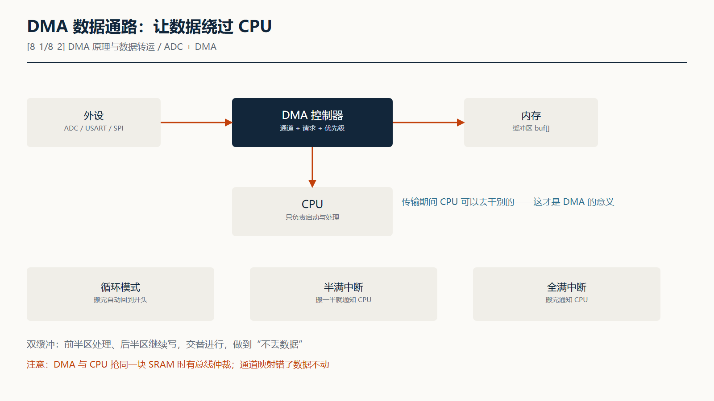

课程时长：约 65 分钟（两节） | 深度版 | 配套结构图与看图理解
8-1 讲原理：DMA 是独立于 CPU 的搬运工；8-2 是实战：内存到内存、外设到内存，以及 ADC + DMA 连续采集。
它的价值不是“更快”，而是“把 CPU 解放出来”——搬运期间 CPU 可以算别的、可以睡觉。
说清 DMA 的通道、请求与优先级
配置一次内存到内存搬运
用 ADC + DMA 做连续采集
理解循环模式与双缓冲

图 15 DMA 数据通路：外设与内存之间直接搬运，CPU 只负责启动与处理
左边是外设，中间是 DMA 控制器，右边是内存。数据从外设直接进内存，不经过 CPU 寄存器。
下方三种模式：循环模式搬完自动回到开头，半满/全满中断告诉你“可以处理了”。双缓冲就是利用这两个中断交替处理，做到不丢数据。
| 要素 | 含义 | 注意 |
|---|---|---|
| 通道 | 每个外设请求映射到固定通道 | 选错通道数据不动 |
| 传输方向 | 外设→内存 / 内存→外设 / 内存→内存 | 内存到内存只有 DMA1 支持 |
| 地址自增 | 内存自增、外设固定 | 配反会写飞 |
| 优先级 | 多个请求同时到达时的仲裁 | 高优先级先搬 |
RCC_AHBPeriphClockCmd(RCC_AHBPeriph_DMA1, ENABLE); DMA_InitTypeDef d; d.DMA_PeripheralBaseAddr = (uint32_t)src; d.DMA_MemoryBaseAddr = (uint32_t)dst; d.DMA_DIR = DMA_DIR_PeripheralSRC; d.DMA_BufferSize = 64; d.DMA_PeripheralInc = DMA_PeripheralInc_Enable; d.DMA_MemoryInc = DMA_MemoryInc_Enable; d.DMA_PeripheralDataSize = DMA_PeripheralDataSize_Byte; d.DMA_MemoryDataSize = DMA_MemoryDataSize_Byte; d.DMA_Mode = DMA_Mode_Normal; d.DMA_Priority = DMA_Priority_Medium; DMA_Init(DMA1_Channel1, &d); DMA_Cmd(DMA1_Channel1, ENABLE); while (DMA_GetFlagStatus(DMA1_FLAG_TC1) == RESET); DMA_ClearFlag(DMA1_FLAG_TC1);
循环模式下，搬完 BufferSize 个数据自动回到开头继续搬，适合连续采集。
双缓冲把这套机制用满：前半满时处理前半，后半继续写；后半满时反过来。CPU 处理与 DMA 搬运并行。
| 模式 | 行为 | 适用 |
|---|---|---|
| Normal | 搬完停止 | 一次性拷贝 |
| Circular | 搬完回到开头 | ADC 连续采集 |
| 双缓冲 | 半满/全满交替 | 实时处理不丢数据 |
定时器触发 ADC → 每次转换完 DMA 自动搬进缓冲区 → 半满/全满中断通知 CPU。全程 CPU 不参与采样。
采样率由定时器决定，不再受软件轮询速度限制，这是“稳定采样”的关键。
/* ADC 侧 */ ADC_DMACmd(ADC1, ENABLE); /* DMA 侧：外设地址固定，内存自增，循环模式 */ d.DMA_PeripheralBaseAddr = (uint32_t)&ADC1->DR; d.DMA_MemoryBaseAddr = (uint32_t)adc_buf; d.DMA_DIR = DMA_DIR_PeripheralSRC; d.DMA_BufferSize = 256; d.DMA_PeripheralInc = DMA_PeripheralInc_Disable; d.DMA_MemoryInc = DMA_MemoryInc_Enable; d.DMA_Mode = DMA_Mode_Circular; DMA_Init(DMA1_Channel1, &d); DMA_ITConfig(DMA1_Channel1, DMA_IT_HT | DMA_IT_TC, ENABLE);
DMA 与 CPU 共用总线。搬运频繁时，CPU 访问内存会被插入等待周期，表现为“程序变慢”。
估算：ADC 1Msps、16 位 → 2MB/s，对 72MHz 的 AHB 不算大；但若同时有多路 DMA + 大量内存访问，就要注意优先级。
| 场景 | 带宽需求 | 影响 |
|---|---|---|
| ADC 1Msps/16bit | 2MB/s | 可忽略 |
| SPI 18MHz 全速 | 约 2.25MB/s | 可接受 |
| 多路同时搬运 | 叠加 | CPU 可能被拖慢 |
为什么 DMA 能省 CPU：搬运由硬件状态机完成，CPU 只需初始化几个寄存器，之后每个数据都不需要取指、读寄存器、写内存。
为什么循环模式适合采集：采集是无限的，Normal 模式搬完就停，必须反复重启；Circular 模式自动回到开头，配合半满中断就是天然的“流水线”。
例 1：ADC 1Msps、12 位右对齐存 16 位，带宽 = 2MB/s；缓冲区 256 个采样点，约 256µs 写满。
例 2：半满中断每 128 个点触发一次，即约 128µs 一次，CPU 有充足时间处理。
例 3：内存到内存搬 1KB，DMA 在 72MHz 总线上几微秒完成，而逐字节循环要上百微秒。
| 错误写法 | 后果 | 正确做法 |
|---|---|---|
| 忘开 DMA 时钟 | 配置无效，数据不动 | RCC_AHBPeriphClockCmd |
| 通道映射错 | 请求收不到 | 查参考手册的请求映射表 |
| 外设地址自增 | 读到错位数据 | 外设地址固定 |
| 缓冲区越界 | 踩坏其他变量 | BufferSize 与数组长度一致 |
DMA 与中断的分工：中断负责“告诉我发生了什么”，DMA 负责“把数据搬好”。两者结合才有“后台采集、前台处理”的结构。
双缓冲为什么能防丢数据：CPU 处理 A 区时，DMA 往 B 区写；B 区满时切换。只要处理时间小于半缓冲的采集时间，就不会覆盖未处理的数据。
内存到内存搬运后逐个比对源与目的
ADC + DMA 采 1kHz 方波，看缓冲区波形是否完整
把采样率提高一倍，观察半满中断是否仍来得及处理
| 现象 | 原因 | 解决 |
|---|---|---|
| 数据全 0 | DMA 没使能或通道错 | 查 DMA_Cmd 与映射 |
| 只搬一次 | Normal 模式 | 改 Circular |
| 数据错位 | 地址自增配反 | 外设固定、内存自增 |
| 偶尔丢点 | 缓冲区太小/处理太慢 | 加大缓冲或用双缓冲 |
Q1. DMA 的核心价值？
A：不占 CPU 完成数据搬运。
Q2. 通道映射错了会怎样？
A：请求收不到，数据不动。
Q3. 循环模式用在哪？
A：连续采集。
Q4. 半满中断的意义？
A：提前处理，避免覆盖。
Q5. 内存到内存哪些 DMA 支持？
A：F103 只有 DMA1 支持。
Q6. DMA 会拖慢 CPU 吗？
A：会争总线，但通常可接受。
Q7. 双缓冲怎么实现？
A：半满/全满交替处理。
Q8. ADC+DMA 采样率由谁决定？
A：触发源（通常定时器）。
1. DMA 搬运时 CPU 在干什么？
答：可以执行其他任务。
2. ADC 连续采集用哪种模式？
答：Circular。
3. 半满中断何时触发？
答：搬完一半时。
4. 外设地址要自增吗？
答：不要，固定。
☐ 懂四个要素
☐ 会配内存搬运
☐ 能配 ADC+DMA
☐ 理解双缓冲